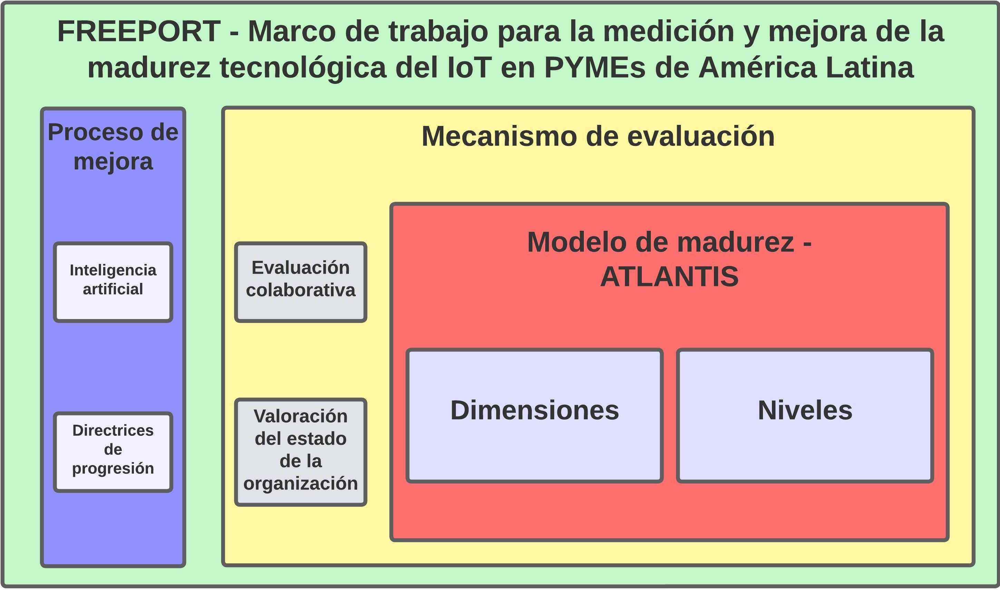

Elementos clave de FREEPORT
FREEPORT se compone de tres elementos fundamentales que trabajan en conjunto para evaluar y mejorar la madurez tecnológica de IoT en las PYMEs:
-
Modelo de madurez - ATLANTIS: Este enfoque estructurado sirve como punto de referencia para evaluar el estado actual de la tecnología IoT. Proporciona una serie de niveles por los cuales una PYME puede evolucionar, abarcando las dimensiones organizativa, tecnológica y humana. Define los requisitos que se deben cumplir para estar en un determinado nivel de madurez. Este modelo sirve como referencia para la medición y mejora de la madurez tecnológica del IoT.
-
Mecanismo de evaluación: Un enfoque definido para medir y valorar la madurez tecnológica de la organización basado en ATLANTIS. Verifica qué requisitos cumple la organización con respecto al modelo de madurez. Este mecanismo permite valorar y recopilar la información necesaria del estado actual de la organización para proporcionar una valoración final del cumplimiento de los niveles de madurez.
-
Proceso de mejora: Un conjunto de pautas que proporcionan orientación para mejorar la progresión en los niveles de cumplimiento de las organizaciones con respecto al modelo de madurez. Esto permite a las empresas tener una guía para adoptar mejor las tecnologías IoT.
¿Por qué FREEPORT?
La adopción del IoT presenta importantes oportunidades para las PYMEs, pero su implementación efectiva sigue siendo un desafío. FREEPORT aborda esta brecha al proporcionar una herramienta práctica, robusta y validada para:
- Autoevaluación: Permite a las PYMEs comprender su nivel actual de madurez en la adopción del IoT a través de un cuestionario en línea, dividido en perfiles específicos (Gerente, Ingeniero y Técnico).
- Identificación de áreas de mejora: FREEPORT destaca las fortalezas y debilidades en cada componente del modelo, orientando a las empresas hacia las áreas que requieren atención para maximizar el potencial del IoT.
- Planificación estratégica: Los resultados de FREEPORT sirven como base para el desarrollo de estrategias y hojas de ruta para la adopción e integración del IoT, alineadas con los objetivos de la empresa.
¿Cómo funciona FREEPORT?
El framework está basado en siete componentes clave, derivados de una taxonomía establecida de tecnologías IoT:
- Gestión de Dispositivos: Evalúa la capacidad de la empresa para implementar, configurar, administrar y mantener los dispositivos IoT.
- Gestión de Conectividad: Analiza la infraestructura de red, protocolos y prácticas de gestión para asegurar una conectividad eficiente y segura.
- Gestión de Nube/Borde: Evalúa la capacidad de la empresa para procesar, almacenar y analizar los datos generados por los dispositivos IoT.
- Integración Empresarial: Examina la integración de los datos del IoT con los sistemas empresariales existentes, como ERP y CRM.
- Seguridad: Evalúa las medidas de seguridad implementadas para proteger los dispositivos IoT, la transmisión de datos y la integridad del sistema.
- Cumplimiento: Verifica el cumplimiento de las regulaciones y las consideraciones éticas relacionadas con la implementación del IoT.
- Contextualización: Analiza la adaptación de las tecnologías IoT a las necesidades y desafíos específicos de la industria y la empresa.
¿Cómo usar FREEPORT?
Bienvenido a FREEPORT, tu herramienta para evaluar la madurez digital de tu empresa. Sigue
estos sencillos pasos para comenzar:
-
Registra tu Empresa:
- Ve a la pestaña "Registrar Empresa".
- Completa el formulario con los datos de tu empresa (nombre, país, actividad, tamaño,
figura legal y correos electrónicos de contacto).
- Importante: Necesitarás al menos un correo, e idealmente de los tres perfiles si aplica.
- Haz clic en "Registrar".
- Guarda tu ID único: Lo necesitarás para acceder más tarde.
- Se enviarán correos con el ID a los contactos registrados para que puedan acceder a
los cuestionarios.
-
Accede con tu Perfil:
- Ve a la pestaña "Ingresar".
- Ingresa tu ID único.
- Haz clic en "Cargar Progreso".
- Selecciona tu perfil: Manager, Engineer o Technician. (Solo verás los perfiles para
los que registraste correos en el paso 1).
-
Responde el Cuestionario:
- Serás redirigido a la pestaña "Modelo de Madurez".
- Responde las preguntas de tu perfil. Están organizadas por componente y dimensión.
- Selecciona la respuesta que mejor describa la situación actual de tu empresa.
- Haz clic en "Guardar respuestas" (ej: "Guardar respuestas de Manager").
-
Calcula tu Puntuación:
- Una vez que los perfiles Manager, Engineer y Technician hayan
guardado sus respuestas, se activará el botón "Calcular Puntuación".
- Haz clic en "Calcular Puntuación".
-
Visualiza tus Resultados:
- FREEPORT calculará tu puntuación en cada componente, dimensión y una puntuación
general.
- Los resultados se mostrarán en la sección "Resultados" de la pestaña "Modelo de
Madurez", incluyendo gráficos y tablas detalladas. Podrás visualizar:
- Puntuaciones por componente (gráfico de barras).
- Puntuaciones por dimensión (gráfico de radar).
- Puntuación general (gráfico de dona).
- Tablas con el detalle de las puntuaciones.
¡Empieza ahora y descubre el nivel de madurez del IoT de tu empresa con FREEPORT!
Publicaciones del Proyecto
Aquí encontrará una lista de publicaciones relacionadas con el proyecto FREEPORT.
Autores: Andrés Felipe Solis Pino, Pablo H. Ruiz, Alicia Mon, Cesar Alberto Collazos
Revista: Internet of Things
Año: 2024
Estado: Publicado
DOI: https://doi.org/10.1016/j.iot.2024.101082
Autores: Andrés Felipe Solis Pino, Pablo H. Ruiz, Alicia Mon, Cesar Alberto Collazos
Revista: Internet of Things
Año: 2024
Estado: Publicado
DOI: https://doi.org/10.1016/j.iot.2024.101100
Autores: Andrés Felipe Solis Pino, Pablo H. Ruiz, Alicia Mon, Cesar Alberto Collazos
Revista: International Journal of Electrical and Computer Engineering (IJECE)
Año: 2024
Estado: Publicado
DOI: https://doi.org/10.11591/ijece.v14i4.pp4697-4713
Autores: Andrés Felipe Solis Pino, Pablo H. Ruiz, Alicia Mon, Cesar Alberto Collazos, Fernando Moreira
Revista: Applied Sciences
Año: 2024
Estado: Publicado
DOI: https://doi.org/10.3390/app14219859
Autores: Andrés Felipe Solis Pino, Pablo H. Ruiz, Alicia Mon, Cesar Alberto Collazos
Revista: Internet of Things
Año: 2024
Estado: Publicado
DOI: https://doi.org/10.1016/j.iot.2024.101457
Equipo de Trabajo
Somos un equipo interdisciplinario de profesionales de Colombia y Argentina, dedicados a impulsar la adopción e implementación de las tecnologías de la Industria 4.0 en Latinoamérica. Nuestra colaboración se desarrolla en el marco del Grupo de Investigación y Desarrollo en Ingeniería de Software (IDIS) de la Universidad del Cauca y el Grupo GIS de la Universidad Nacional de La Matanza.
Este proyecto es posible gracias al apoyo del Ministerio de Ciencia, Tecnología e Innovación de Colombia, a través de su convocatoria de "Formación de capital humano de alto nivel para promover el liderazgo social comunitario y afrontar la Cuarta Revolución Industrial en el departamento del Cauca". Esta valiosa iniciativa financia los estudios de doctorado de Andrés Felipe Solís Pino, bajo la tutela principal del Dr. César Alberto Collazos y la codirección de la Dra. Alicia Mon (Universidad Nacional de La Matanza, Argentina) y el Dr. Pablo Ruiz (Universidad del Cauca, Colombia).
La investigación se enmarca en el trabajo doctoral de Andrés Felipe Solís Pino, titulado "Marco de trabajo para la medición y mejora de la madurez tecnológica del Internet de las Cosas en pequeñas y medianas empresas de América Latina".